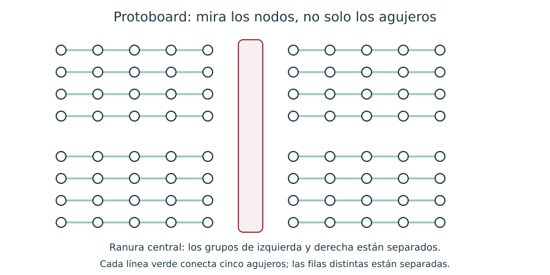

Contenido
Actividades a tu ritmo
Abrir actividades sin cronómetro y con teclado (ventana nueva). Incluyen todas las preguntas de esta página, sus soluciones y explicaciones. Puedes elegir esta vía en lugar de los juegos del final.
La protoboard permite conectar componentes sin soldar. La apariencia de los agujeros no revela todas sus conexiones internas: hay que reconocer los grupos y comprobar los raíles de alimentación.

Antes de empezar
- Sin alimentación, comprueba continuidad en una fila de cinco puntos y ausencia de continuidad al otro lado de la ranura.
- Comprueba si los raíles largos están cortados en su mitad. Un puente solo se añade cuando hace falta.
- Conecta positivo y 0 V a raíles diferentes; acuerda colores estables para distinguirlos.
- Identifica los terminales de cada componente y prepara el esquema.
- Conecta por ramas, revisando cada nodo. Evita que las dos patillas de un componente queden en el mismo grupo conectado.
Tres prácticas
- Divisor y LED: relacionar medida y cálculo.
- Luz nocturna con LDR: pasar de un interruptor manual a un sensor.
- Alarma térmica: comprobar una segunda entrada y salida.
Para cada práctica, el equipo completa una fila de su ficha de comprobación y cada integrante anota su explicación en el informe. La observación del montaje se registra en la tarea Prácticas en protoboard.
Si el componente se calienta, huele, o la fuente entra en limitación, desconecta y revisa el esquema. La seguridad y el cuidado del material se practican siempre; no se convierten en puntos extra de la calificación.
Lista desordenada
Ordena el procedimiento de principio a fin.
- Desconectar la alimentación
- Identificar nodos, polaridades y terminales
- Montar siguiendo el esquema
- Revisar conexiones y escala del instrumento
- Alimentar y medir
- Desconectar antes de modificar